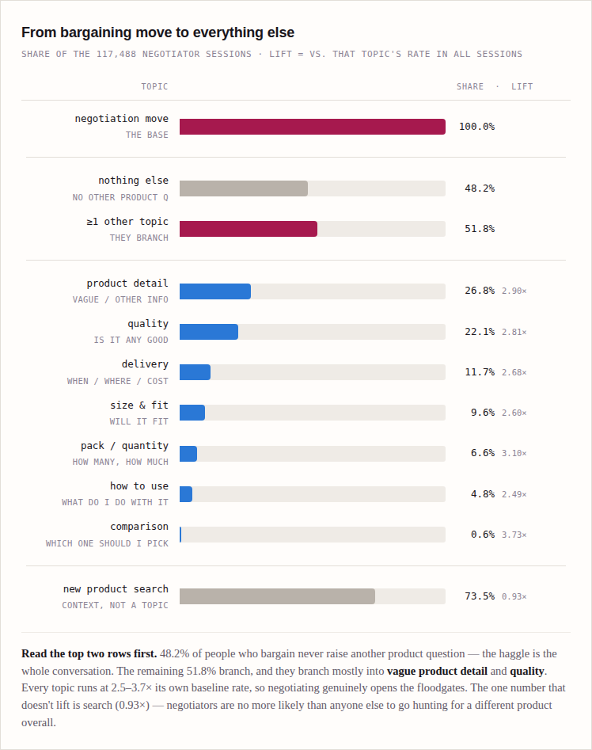
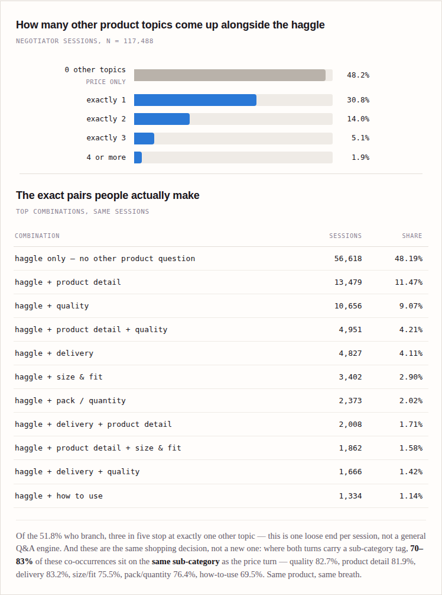

Alternate Product Discovery
KRD — Vaani Alternative Discovery on Price Turns
On a price turn, the backend pulls the product's competitor set from the comp-swap API, scores and groups it on P0/P1/P2 signals, and opens it as a bottom sheet — the primary surface. Vaani speaks a verdict against the anchor, then answers comparisons across the sheet. Separately, Vaani moves from the floating action button to a persistent strip at the top of every page.
| Field | Value |
|---|---|
| Current Version | v2 — comp-swap sourcing, primary surface, voice strip |
| Current Status | Draft for engineering handoff |
| Last Updated | 8 September 2026 |
| POD | Vaani for 1+ |
| Contributors | PM: Ishan | Engineering: TBD |
| Builds on | Product note — Price Discovery → Better Value; combined view — How Vaani Can Help in Exploit Journeys; behavioural read — "The Question After the Haggle" (price-negotiation exit and category-drift data) |
| Depends on | KRD — Vaani Data Enrichment — supplies the P1/P2 fields the verdict reads |
| Ships as | A single build — the persistent voice strip, the comp-swap-sourced primary surface (bottom sheet), candidate scoring and grouping, the bulk product-context processor, and the spoken verdict, together. Needs Android + design. |
Section I: Executive Summary
1. Problem Statement
Price is the dominant ask on PDP Vaani turns — roughly 70% of DECIDE turns at every hunt depth — and 44.6% of those price turns are outright negotiation. Today that ask gets a price answer or, worse, a re-search of the same sub-category. Measured across 879,571 Vaani PDP turns, a same-sscat re-search after a DECIDE turn converts worse than doing nothing at all, and fewer than 15% of Vaani re-searches preserve the constraint the buyer just stated.
The behaviour underneath the ask is well established. Buyers anchor on one product and then grind through 7.1 more clicks of the same product type before ordering. They are not chasing the price floor — the alternative they click before buying is priced above the eventual purchase about as often as below — but any gap between where they land and what they buy multiplies the work: landing at 2× the price finally paid costs +56% more browsing.
Negotiation-session data sharpens the same mechanism. Across 117,488 sessions with a price-negotiation move, 69.7% keep talking after the last haggle — and the single most common next move, well ahead of any other product question, is a plain new search (35.9% of continuing sessions; only 13% turn into a genuine product question). That search leaves the anchor's sub-category immediately: 62% of the time on the very first post-haggle search turn, rising to 76% across the full tail. The cost is concrete — sessions that keep searching inside the same sub-category return to the original product 39.3% of the time, against 29.7% for sessions that switch category, a ~10pp same-product conversion gap paid to an unrelated listing. (Source: "The Question After the Haggle," turn-tagging 20 May–20 Jul 2026.)
So the buyer asking "is this the best price?" is asking whether to buy this one. This KRD ships the answer: pull the product's competitor set, score and group it so the good ones land at the top, open it as a bottom sheet, and say out loud which is the better buy and why — then keep answering while they compare.
2. Product Thinking
Four claims this KRD wants to support or reject:
-
A price ask is an alternative-discovery intent, not a discount request. If true, a scored, grouped competitor set on a price turn should raise same-sscat conversion versus the current price answer. If false, buyers will abandon the feed and re-ask for a discount. (Independent evidence: after a negotiation stalls, a plain product search — not a product question — is the buyer's overwhelmingly dominant next move, 35.9% vs. 13%. See below.)

Of the 117,488 negotiation sessions, 48.2% never raise another product question — the haggle is the whole conversation. The other 51.8% branch, overwhelmingly into product detail and quality, each running 2.5–3.7× its own baseline rate. This is the direct evidence for Claim 1: negotiation opens a real alternative-discovery window, not just a discount ask.

Of the branching 51.8%, three in five stop at exactly one other topic — a single loose end per session, not a general Q&A. The top pairs are haggle + product detail (11.5%) and haggle + quality (9.1%). Critically, 70–83% of these co-occurring topics sit on the same sub-category as the price turn (quality 82.7%, delivery 83.2%, product detail 81.9%) — confirming the verdict's P0/P1/P2 fields (rating, delivery promise, review images) are exactly what buyers are already asking about, on the same product, in the same breath.
-
Deterministic scoring on P0 alone is enough to beat default order. Six fields — price, rating, rating count, seller rating, availability, Mall/Gold — should be sufficient to move a better product into the first screen. This is testable in isolation from the LLM (the LLM is still used for grouping and the verdict — see below).
-
A spoken verdict converts better than a silent grouped sheet. The primary surface's scoring and grouping changes what the buyer sees; the verdict changes what they understand. The delta between them is the value of the verdict, and is measurable as an isolated increment.
-
Buyers can act on a voice reference without a deep-link. With no scroll-to and no deep-link, the buyer must locate the product Vaani described. If product-open rate from the top three is weak, the navigation capability we deliberately cut has to come back.
3. NSM — Success & Check Metrics
3.1 Primary Success Metric
| Metric | Definition |
|---|---|
| Same-sscat alternate purchase rate | Share of price turns whose session goes on to a cart-add or order within the anchor's sscat. Measured against the current price-turn behaviour as control. |
Current baseline, before this build: post-haggle searches that stay in the anchor's sub-category return to the original product 39.3% of the time; searches that switch category, 29.7% (n = 31,825 negotiator sessions with a tagged post-haggle search). This gap is the size of the opportunity the build targets.
Explicitly not the primary metric: within-Vaani order rate. That is selection, not lift — buyers who reach Vaani late in the hunt already convert better. Judge this feature on effort and same-type conversion.
3.2 Secondary Metrics
| Metric | Definition |
|---|---|
| Clicks to decision after the turn | Same-sscat product clicks between the price turn and the order. Baseline is 7.1 post-anchor clicks; a working alternative engine cuts it. |
| Candidate coverage | % of price turns where the pool cleared the 4-candidate floor and scoring/grouping actually ran. Bounds how much of the population the feature can affect at all. |
| Top-3 product open rate | Share of primary-surface opens where the buyer opens one of the first three products shown. The direct read on whether scoring/grouping put the answer where the thumb is. |
| Verdict spoken rate | % of primary-surface opens where the model judged something worth saying and spoke. Both extremes are bad — near 100% means the meaningfulness bar is not working, near 0% means it is too strict. |
| Post-verdict open rate | Share of spoken verdicts followed by the buyer opening a product Vaani named. Tests the no-deep-link decision directly. |
| Text-search fallback rate | % of price turns where the buyer abandons Vaani for raw catalog search within the same session. Down is good. |
| Group engagement | Opens per group on the primary surface, so we learn which of the six intents buyers actually shop by. |
| Comparison-turn rate | Share of primary-surface opens followed by at least one further Vaani turn taken while the sheet is up. The read on whether the bulk product-context processor is earning its build — a sheet nobody talks to did not need it. |
| Voice initiation rate per session | Vaani turns started per session, split by interaction_type. The strip replaces the floating action button app-wide, so this is the read on whether a persistent strip is invited more often than a button — measured across all screens, not just price turns. |
3.3 Guardrail Metrics
| Metric | Definition |
|---|---|
| Unsupported-claim rate | % of spoken verdicts containing a factual claim not derivable from a field supplied in the prompt payload. Target 0. Sampled and human-audited. |
| Positional-mismatch rate | % of verdicts where a stated position ("the second one") does not match the product's actual rank on the rendered primary surface. Target 0. |
| Unavailable recommendation rate | % of scored or spoken products that were out of stock or non-servicable at render. Target 0 — availability is a gate before scoring, not a post-hoc apology. |
| Thin-pool rate | % of price turns where fewer than 4 candidates survived the price filter, so no scoring/grouping ran. Diagnoses whether the price filter is too tight. |
| Added latency | P95 added to primary-surface open and to first spoken word, versus the buyer's current default path. Includes the comp-swap round trip. |
| Anchor abandonment without purchase | Share of price turns where the buyer leaves the anchor and buys nothing in the session. Catches the case where we talk buyers out of a fine purchase. |
Section II: Product Requirement Document
1. User Stories & Capabilities
| ID | Persona | As a… | I want to… | So that I can… |
|---|---|---|---|---|
| US-501 | Buyer questioning price | shopper on a PDP who thinks the price is too high | see comparable products in the same price range with the good ones first | judge whether this price is fair without opening ten PDPs |
| US-502 | Buyer negotiating | shopper asking Vaani to make it cheaper | be shown a genuinely better-value option instead of a refusal | get to a purchase I feel good about |
| US-503 | Buyer who wants a recommendation | shopper looking at a feed of similar products | hear which one is the better buy, and why, against the product I was already on | decide without comparing seven listings myself |
| US-504 | Buyer with a specific variant | shopper who already picked a size on the PDP | have that size accounted for when Vaani tells me what to buy | not be recommended something I cannot wear |
| US-505 | Buyer with a priority | shopper who cares most about delivery speed, or returns, or price | see the options grouped by that priority | shop the axis I actually care about |
| US-506 | Buyer wanting a trusted option | shopper in a category where a bad unit is costly | know when a Mall option exists | trade a little price for confidence |
| US-507 | Buyer whose product has no close match | shopper on an item with a thin competitor pool | be told there is nothing better, rather than shown filler | trust Vaani the next time it does have an answer |
| US-508 | Buyer comparing what is on screen | shopper looking at the alternatives Vaani just put up | ask about any of them, or about them against the product I came from, and be answered | finish the comparison by talking instead of opening every card |
| US-509 | Any buyer, any screen | shopper anywhere in the app | see that Vaani is there, and what it is doing, without hunting for a button | start talking when the question occurs to me rather than when I remember the feature exists |
2. Scope
2.1 In Scope
Price-intent detection on PDP Vaani turns, firing candidate retrieval for the anchor. See 3.1.
Anchor resolution, including the reco-feed case where the anchor remains the PDP. See 3.2.
Comp-swap as the candidate source — the backend calls the existing comp-swap API for the anchor and reads back the competitor products with their full detail. See 3.3.
Candidate pool of the top 50 after the price filter, with the 4-candidate floor below which nothing is scored or grouped. See 3.4.
Deterministic P0 scoring applied to the pool, with config-driven weights. See 3.5.
Mall priority lift in the scoring, plus a client badge on Mall/Gold cards. See 3.6.
Verdict payload assembly: the anchor (with its selected variant) plus the top 6–7 scored products, each carrying P0 + P1 + P2 fields and its rank. See 3.7.
LLM verdict generation under the v1 prompt, including the silence path and the product-reference rules. See 3.7 and 3.8.
Voice delivery of the verdict. No deep-link, no scroll-to, no Vaani-driven navigation.
Post-generation validators for unsupported claims and positional mismatch. See 3.9.
The primary surface — an SDUI bottom sheet the backend composes and opens on a price turn, carrying the scored, grouped competitor set with the anchor pinned. See 3.10.
LLM grouping of the 50-candidate pool against the fixed six-group taxonomy. See 3.10 and 3.11.
Reco feed as a second source into the same surface, including the LLM's decision to use it. See 3.12.
The persistent voice strip — Vaani's entry point moves from the floating action button to a strip at the top of every page, with the five states in 3.13. This is an app-wide interaction change, not a price-turn one.
The
primary_surface_openaction — a third backend-triggered client action alongside search and filter. See 3.14.The bulk product-context processor — serves the full detail of every product on the sheet plus the anchor into the turn, so Vaani can answer comparison questions about them. See 3.15.
Instrumentation across the strip, trigger, pool, scoring/grouping, verdict, surface open and comparison turns. See 8.
2.2 Out of Scope
Carry-over filters. Replaying the colour, fabric, size or other attributes the buyer established earlier in the session is deferred. This build carries only the price filter. The single exception is the variant already selected on the anchor PDP itself, which is read directly off the anchor (US-504) rather than from session memory.
Image search as the candidate source. Dropped, not deferred — comp-swap does the same job in one call (3.3). It returns as a second source only if comp-swap coverage proves to be the binding constraint.
The floating action button. The strip replaces it; the two do not coexist.
interaction_typeexists to read the migration, not to keep both alive.Vaani-driven navigation. Scroll-to-position, deep-linking to a PDP, and opening a curated pid list are all cut, not deferred. Scoring and grouping are the substitute: put the answer at the top instead of walking the buyer to it. Revisit only if post-verdict open rate is weak (see 3.2 of Section I).
Price negotiation of any kind. Vaani never changes a price, promises a discount, or implies one is available.
LLM involvement in scoring. The candidate order is deterministic. The model explains it; it never produces it. The LLM's grouping is an organisation of the pool into the fixed taxonomy, not a re-ranking of the feed.
Combo per-unit value maths. Comparing a 2-piece pack's effective per-unit price against single listings is out of v1; combo structure is not in P0–P2.
Cross-session memory of any kind. Everything here is within the current session.
Non-PDP entry points for this flow. Home, CLP and search-result screens do not fire alternative discovery in v1; reco entry arrives only via 3.12. This limits the flow, not the strip — the strip ships on every page, it just opens a primary surface nowhere but the PDP yet.
3. Product Decision Framework
3.1 Trigger Definition
Surface: PDP only, in v1.
Intent classes that fire: asking the price; asking whether the price is good/fair; negotiating ("make it cheaper", "isse sasta kuch hai"). All three are price intents on the product in hand.
Intent classes that do not fire: questions about the product itself (fit, material, how-to-use), delivery queries, order-status queries — even when a price is mentioned in passing.
Turn classification reuses the existing turn classifier. This KRD does not introduce a new classifier; it consumes the price sub-type already produced.
Repeat asks: a second price turn on the same anchor within the same session re-uses the existing pool if the filter and availability are unchanged, rather than re-running the search.
3.2 Anchor Resolution
The anchor is frozen at trigger and held for the whole exchange. Everything the verdict says is relative to it.
| Situation | Anchor |
|---|---|
| Buyer is on a PDP | That PDP. |
| Buyer has scrolled into the PDP's recommendation feed and asks about price | Still the PDP — never a card in the reco rail, and never whichever product is on screen. |
| Buyer opens a new PDP and asks again | The new PDP. A genuine PDP landing starts a new hunt; scrolling does not. |
The anchor record carries: pid, catalog id, sscat, price, rating, rating count, seller id and rating, Mall/Gold flag, and the variant currently selected on the PDP. The pid is what the comp-swap call is keyed on (3.3), so anchor resolution and candidate sourcing are the same decision made once: get the anchor wrong and every product on the sheet is wrong.
3.3 Candidate Constraints
Price filter: the bucket that just contains the anchor's price. A ₹289 anchor takes under ₹299. Never jump to the cheapest available bucket — the divergence is larger than the buyer asked for and the resulting pool degrades into low-quality catalogs.
Availability: in-stock and servicable to the buyer's pincode, enforced at retrieval.
Nothing else. No attribute filters in this build (see 2.2).
Visibility: the applied price filter renders as a normal, user-editable filter chip. If the buyer edits it, candidates are re-retrieved for the new band and scoring/grouping re-applies.
Source: the comp-swap API. The backend calls comp-swap with the anchor's pid and reads back that product's competitor set. Comp-swap returns the products with their detail — one call for both the pool and most of the fields scoring and the verdict need. That is why it replaced image search, which gave us a visual match and nothing else.
Fields required per competitor: pid, catalog id, sscat, price, rating, rating count, seller id and seller rating, Mall/Gold flag, availability, and the card image. P1/P2 fields comp-swap does not carry are read from enrichment as before (5.1). A candidate whose enrichment cannot be resolved still scores on P0 — a missing field means the verdict skips that dimension, not that the candidate is dropped.
Coverage is a first-class risk. A product with no competitor set is one this flow cannot serve at all. Log empty and error responses separately from a thin post-filter pool (8): different failures, different owners, and conflating them hides whichever is biting.
Boundary cases to close in build: an anchor priced exactly at a bucket edge; an anchor above the top bucket; and a comp-swap response that returns competitors outside the anchor's sscat.
3.4 Candidate Pool & Rerank Eligibility
Pool size: 50, taken from the comp-swap set after the price filter is applied — not 50 raw competitors subsequently filtered. If comp-swap returns fewer than 50 to begin with, the pool is what it returns.
Floor: 4. If fewer than 4 candidates survive the filter, do not score or group. The primary surface still opens (3.10), but the pool renders in comp-swap's order and no verdict is attempted — there is nothing to compare. Log it as a thin pool; it feeds the guardrail metric that tells us whether the price filter is too tight.
Availability is a gate, applied before scoring. An unavailable candidate is removed from the pool, not down-weighted, and does not count toward the 4.
3.5 Rerank Logic — P0 Scoring
The rerank is deterministic, backend-side, and runs before the primary surface is composed. It scores candidates on their own P0 merits. A candidate does not have to beat the anchor to rank — this stage produces an ordered list of what is available in the band, and the anchor comparison happens later, in the verdict.
3.5.1 In plain terms
Every candidate gets a score out of 100. Four things earn points, and one adds a bonus. The pool is then sorted by that score.
| Factor | Points | What earns them | Why it is weighted this way |
|---|---|---|---|
| Rating | 35 | The best-rated product in the pool gets all 35; the worst gets 0. | Quality is the thing the buyer cannot see from the image, so it carries the most weight. |
| Rating volume | 25 | How many people rated it — the most-rated product in the pool gets all 25. | A rating is only as good as the evidence behind it. This is what makes a well-established product beat a barely-reviewed one. |
| Price | 25 | The cheapest product in the band gets all 25; the most expensive gets 0. | The buyer asked about price, so cheaper must count — but at 25 of 100 it cannot buy its way to the top on its own. |
| Seller rating | 15 | The best-rated seller in the pool gets all 15. | Real but weaker signal than the product's own rating; it breaks near-ties rather than driving the order. |
| Mall / Gold | +5 bonus | Flat bonus if the product is Mall or Gold. | Lifts trusted stock without letting a mediocre Mall product outrank a clearly better one. |
Points are relative to the pool, not absolute. Within each factor, the best candidate among the surviving 50 gets full points and the worst gets zero, with everyone else spread in between. We do this because absolute thresholds do not travel across categories — a 4.0 rating is strong in one sub-category and ordinary in another. The consequence to keep in mind: a zero on a factor means "worst in this pool", not "bad".
3.5.2 Two rules that stop the obvious failures
Ignore ratings with too little evidence behind them. If a product has fewer than 50 ratings, we do not trust its rating — we score it as the sub-category's median rating instead. Without this, a 5.0★ from 3 people beats a 4.2★ from 900, which is the single most obvious way a naive "cheaper and better rated" rule fails.
Score the scale of the rating count, not the raw number. The gap between 10 ratings and 100 matters far more than the gap between 900 and 990. So we score the order of magnitude (a log), which stops one viral product with 50,000 ratings from flattening every other candidate's volume score to nothing.
3.5.3 Default configuration — v1 starting point
These are the values to ship with, and every one of them is config rather than code. They are a considered starting point, not a tuned answer; expect the first weight set to be wrong and plan to move it.
| Constant | Default | Note |
|---|---|---|
| Rating weight | 35 | Weights sum to 100 so a score reads as a percentage. |
| Rating-volume weight | 25 | |
| Price weight | 25 | |
| Seller-rating weight | 15 | |
| Mall / Gold bonus | +5 | Flat, additive. Deliberately small — see 3.6. |
| Rating-confidence floor | 50 ratings | Below this, the rating is replaced by the sub-category median. |
| Candidate pool | 50 | Taken after the price filter (3.4). |
| Rerank floor | 4 candidates | Below this, no rerank at all (3.4). |
| Tie-break | By product ID | Two equal scores must always order the same way, so the feed does not reshuffle between identical calls. |
3.5.4 Worked example
Anchor: ₹289, 3.9★ on 212 ratings. Price band: under ₹299. Five candidates survive the filter. Sub-category median rating is 4.0.
| Rank | Candidate | Price | Rating | Ratings | Seller | Mall | Score |
|---|---|---|---|---|---|---|---|
| 1 | A | ₹249 | 4.2★ | 938 | 4.3 | — | 86.1 |
| 2 | C | ₹279 | 4.1★ | 460 | 4.1 | Yes | 68.8 |
| 3 | B | ₹219 | 4.4★ | 41 | 3.9 | — | 57.5 |
| 4 | D | ₹199 | 3.6★ | 120 | 3.6 | — | 39.0 |
| 5 | E | ₹289 | 4.6★ | 8 | 4.0 | — | 31.9 |
Three things this example is meant to demonstrate:
The highest-rated product finishes last. E is 4.6★ — the best rating in the pool — but on 8 ratings, so the confidence floor replaces it with the median and it earns nothing on volume. This is the behaviour we most want.
The cheapest product does not win. D at ₹199 takes all 25 price points and still finishes fourth, because it is the worst in the pool on both rating and seller rating. Price alone cannot carry a weak product.
B looks like a bargain and is not. ₹219 with 4.4★ is the most attractive-looking card in the feed, but 41 ratings puts it under the floor. It still places third on price strength — the rule dampens it rather than burying it.
Caveat for QA and for tuning: with only five candidates the pool-relative scoring is jumpy, because one product sets the floor and another the ceiling on every factor. At a full pool of 50 the spread is much smoother. This is a further reason for the 4-candidate floor in 3.4 and for replaying weights offline before release.
3.5.5 The general form
The same thing, written for implementation. Weights, the confidence floor and the bonus are all config values; the shape below is what stays fixed.
score(c) = w_rating · norm(rating_adj(c)) # w_rating = 35
+ w_volume · norm(log1p(rating_count(c))) # w_volume = 25
+ w_price · norm(price_advantage(c)) # w_price = 25
+ w_seller · norm(seller_rating(c)) # w_seller = 15
+ w_mall · is_mall_or_gold(c) # w_mall = 5
where
rating_adj(c) = rating(c) if rating_count(c) >= C # C = 50
= sscat_median_rating otherwise
price_advantage(c) = (band_ceiling - price(c)) / band_ceiling
norm(x) = (x - pool_min) / (pool_max - pool_min) # 0..1 within the surviving pool
tie-break = stable, by pidAll weights and
Care config, not code. They must be tunable without a release, because the first weight set will be wrong.Suggested starting intent (not final): value dominates, evidence gates it, price breaks near-ties. Ship with rating and volume carrying most of the weight, price as a modest term, seller rating as a smaller one.
P1 and P2 are not available here. Review-image presence, return rate, seller tenure and delivery promise cannot enter the rerank. This is a known limitation, and it is why the verdict is allowed to disagree with the rank order (3.7).
3.6 Mall / Gold Handling
Rerank: Mall/Gold membership is a bounded priority lift (
w_mall), so trusted stock rises in the stack without a much better non-Mall product being buried beneath a mediocre Mall one.Surface: the client badges Mall/Gold cards, so the trust signal is visible without Vaani saying anything.
Verdict: when a Mall/Gold option is in the spoken set, Vaani may mention that the option is also available from Mall / the original brand.
Out of scope: injecting Mall products from outside the price band. The price filter stays hard in v1 — Mall handling is a lift and a highlight within the band, not a band exception.
3.7 Verdict Generation
The verdict is the answer to "should I buy this one?". It is spoken, it is grounded in supplied fields, and it never re-orders the sheet.
Input window: the top 6–7 scored products. There is no fixed
kfor output — the model receives the window and decides which of them are worth mentioning. The bar for "worth mentioning" is set by prompt, not by code.Payload per product: rank, pid, and all of P0 + P1 + P2 — price, rating, rating count, seller rating, Mall/Gold, review images present, return rate, seller tenure, delivery promise. P1 and P2 come from the existing enrichment fields; this is a read, not a new build. [info enrichment v0 processors which we have built]
The anchor is in the payload, with the same fields plus the buyer's selected variant. Without it the model cannot say "₹40 cheaper" or "four times the ratings", and the verdict degrades into a description.
The verdict may disagree with the score order. The scoring sees P0 only; the verdict sees P1 and P2 as well, so rank 2 may genuinely be the better buy once review images and return rate are visible. The model is permitted — and expected — to say so, naming the position it is talking about. This is deliberate: the alternative is throwing away the enrichment fields at the moment they matter most.
Product reference: by position ("the first one", "the second one") or by price ("the ₹249 one"). Not by attribute — a competitor set shares its visible attributes by construction, so "the red cotton one" identifies nothing. Never by pid.
Position means rank on the rendered primary surface, not order of mention. If the model talks about products out of order, it must state the position explicitly. A positional claim that does not match the sheet is a guardrail failure. The same rule binds comparison turns taken against the sheet (3.15).
Silence is a valid output. If nothing in the window is a meaningfully better buy than the anchor, Vaani says so plainly — "yeh theek hai, isse behtar kuch khaas nahi mila" — rather than inventing a reason to move the buyer. That case is US-507, and it is trust-building rather than a failure.
3.8 Verdict Prompt — v1
Ships as config, versioned, tunable without a release. Treat the copy below as the v1 baseline to iterate against, not as final wording.
ROLE
You are Vaani, a shopping assistant inside the Meesho app. The shopper is looking at
one product (the ANCHOR) and has just questioned or tried to negotiate its price.
A ranked list of similar, in-stock products in the same price band is on their screen.
Your job: tell them, out loud, whether one of these is a better buy than the anchor —
and if so, which, and why.
INPUT
anchor: { price, rating, rating_count, seller_rating, is_mall_or_gold,
has_review_images, return_rate, seller_tenure, delivery_promise,
selected_variant }
candidates: ordered list, each { rank, price, rating, rating_count, seller_rating,
is_mall_or_gold, has_review_images, return_rate, seller_tenure,
delivery_promise }
language: the language the shopper is speaking
WHAT COUNTS AS WORTH SAYING
Speak only if at least one candidate is a materially better buy than the anchor.
Material means a difference a shopper would act on — a clearly lower price for
comparable or better evidence of quality, or a similar price with clearly stronger
evidence (many more ratings, review images present, a better-rated seller, a lower
return rate, a faster delivery promise).
Do NOT speak just because a candidate is marginally cheaper, or because it is ranked
first. A trivial price gap with weaker ratings is not worth saying.
If nothing clears that bar, say so plainly and briefly. Do not invent a reason to move
the shopper off the anchor. Telling them their current pick is already fine is a good
outcome.
HOW TO REFER TO A PRODUCT
Refer to products by their POSITION in the list ("the first one", "the second one") or
by their PRICE ("the ₹249 one"). Prefer price when it is unambiguous.
Never refer to a product by its visible attributes — colour, fabric, print, style. Every
product in this list looks similar, so attributes identify nothing.
Never say a product ID.
POSITION ALWAYS MEANS RANK IN THE LIST YOU WERE GIVEN — never the order you mention them
in. If you discuss them out of order, state the position explicitly.
RANK VS JUDGEMENT
The list order was produced by rules that could only see price, rating, rating count and
seller rating. You can also see review images, return rate, seller tenure and delivery
promise. If a lower-ranked product is genuinely the better buy once those are considered,
say so — name its position and the reason. You are not obliged to lead with the first one.
GROUNDING
Every factual claim must come from a field you were given. Never estimate, infer or
invent a price, rating, count, delivery time, return rate or seller fact. If a field is
missing, do not mention that dimension at all.
Do not discuss discounts, coupons, offers or price reductions. You cannot change prices
and must not imply that you can.
MALL / GOLD
If a candidate you are recommending is Mall or Gold, you may note that the option is
also available from Mall / the original brand. Mention it as added confidence, never as
a reason to spend beyond what the shopper signalled.
VARIANT
If the shopper has a variant selected on the anchor (e.g. a size), keep it in view — do
not recommend an option that cannot serve it. If you cannot tell, do not claim it fits.
STYLE
Speak in the shopper's language, including Hinglish if that is what they used.
This is voice: two to three short sentences. Mention at most three products.
Lead with the recommendation, then the single strongest reason. No lists, no preamble,
no restating the question.
OUTPUT
Either the spoken line, or the exact token NO_VERDICT if nothing is worth saying.3.9 Verdict Validators [optional / we can debate this]
Run before the verdict is spoken. Both are cheap, deterministic, and protect the two guardrails in 3.3 of Section I.
| Validator | Check | On failure |
|---|---|---|
| Numeric grounding | Every number in the output (price, rating, rating count, days) matches a value supplied in the payload for the anchor or a candidate. | Suppress the verdict, log grounding_pass = false with the offending span on alt_verdict (8.3). Do not retry silently in v1. |
| Positional consistency | Any positional phrase resolves to a rank present in the payload, and the product described at that position matches the payload's product at that rank. | Suppress the verdict, log position_pass = false on alt_verdict (8.3). |
Suppression is preferable to a wrong verdict: the sheet's scored, grouped candidates are still on the screen and still useful without a voice line.
3.10 The Primary Surface
A bottom sheet, not a full-screen CLP. Called the primary surface throughout, because the surface is the durable asset and this flow is only its first tenant.
Opens on a price turn, over whatever screen the buyer is on. A sheet rather than a page is the point: the anchor stays on screen behind its alternatives.
Opened by the backend, through the
primary_surface_openaction (3.14). The client does not decide to show it.SDUI-driven: the backend composes what goes into it. Comparison views and everything after them will live here.
Anchor pinned on the sheet, so the comparison is on screen rather than in memory.
Vaani stays live while it is up. The strip does not go away, and a turn taken against the sheet is answered with the sheet's products in context (3.15). That is the difference between a result and a conversation.
Source-agnostic: comp-swap is one source feeding the surface. The reco feed is a second source (3.12). Neither is the surface.
Groups come from a fixed taxonomy we define and instruct. The model assigns products to our groups; it never invents a group. Fixed groups are what make engagement measurable per intent and the output testable at all.
| Group | Qualifying signal | Tier |
|---|---|---|
| Arrives faster | delivery promise | P2 |
| Better quality | rating, with rating count as evidence | P0 |
| Low return risk | return rate | P2 |
| Experienced seller | seller tenure, with seller rating | P2 (+P0) |
| Absolutely cheapest | price | P0 |
| Has real review images | review images present | P1 |
The six groups map one-to-one onto P0/P1/P2 — the taxonomy needs no data we do not already have. Mall/Gold stays a badge across groups rather than a seventh group, so trust reads as an attribute of an option rather than a competing axis.
The taxonomy is fixed at six. How many are visible above the fold, and what happens to the rest, is a design question — section 4.
3.11 Grouping Prompt — v1
ROLE
You are organising a pool of similar, in-stock products for a shopper who has just
questioned the price of the product they were looking at (the ANCHOR). Sort the pool
into the fixed groups below so the shopper can shop by what they care about.
INPUT
anchor: same fields as candidates
candidates: up to 50 products, each { pid, price, rating, rating_count, seller_rating,
is_mall_or_gold, has_review_images, return_rate, seller_tenure,
delivery_promise }
context: what the shopper has said so far this turn
THE GROUPS — use these and only these
arrives_faster qualify on delivery_promise
better_quality qualify on rating, evidenced by rating_count
low_return_risk qualify on return_rate
experienced_seller qualify on seller_tenure, supported by seller_rating
cheapest qualify on price
has_review_images qualify on has_review_images
RULES
Never invent, rename or merge a group.
A product may appear in more than one group where it genuinely qualifies.
Put a product in a group only if the qualifying field actually supports it — a group is
a claim, not a bucket to fill. Prefer a smaller, honest group over a padded one.
Leave a group empty if nothing qualifies. Empty groups are dropped, not filled.
Cap each group at 6 products, best-qualifying first.
Order the groups by how relevant they are to what the shopper has said this turn; when
they have signalled nothing, use the order listed above.
Flag is_mall_or_gold products so the client can badge them. Do not create a Mall group.
Never use a field that is absent. Never estimate a value.
OUTPUT
For each non-empty group: the group key, and its products as { pid, rank_in_group, and
the single field value that justifies inclusion }.3.12 Reco Feed as a Second Source
Comp-swap finds the same product cheaper. The reco feed is how Vaani answers a different question — and it enters through the same primary surface.
| Entry | Condition | Behaviour |
|---|---|---|
| Buyer moves into the reco feed | Buyer scrolls down from the PDP into recommendations | Vaani may ask what they are looking for, and compose the primary surface from reco stock against that answer. |
| Attribute absent on the anchor | Mid-conversation the buyer asks for an attribute the anchor does not have (a different material, a different colour) | Comp-swap cannot serve this — a competitor set for the anchor is by construction the attribute the buyer is trying to leave. Source from reco instead. |
| No meaningful alternative | Comp-swap returns nothing, the surviving pool is thin, or nothing clears the verdict bar | Vaani says so, and may offer reco-sourced suggestions rather than ending empty-handed. |
Which source to use is a judgement the model makes from the conversation, not a hard rule — and source selection must be logged on every turn so the decision can be audited.
3.13 The Voice Strip
Vaani's entry point moves from the floating action button to a persistent strip at the top of every page. The button is removed, not demoted. Two things change: Vaani is always visible rather than discovered, and Vaani has somewhere to show what it is doing — which the button never did.
The strip carries a mic. Tapping it starts listening. Everything else the strip does, it does by changing state.
| State | What it means | Entered from |
|---|---|---|
idle |
Vaani is present and available. The resting state. | Page load; end of any other state. |
listening |
The mic is open. A waveform responds to what is being said, so the buyer can see they are being heard. | Buyer taps the mic. |
post_listen_confirmation |
What Vaani heard is shown back before it is acted on. Makes a misheard turn cheap to correct, instead of something the buyer sits through and then undoes. | ASR end (soft or hard stop). |
processing |
The turn is with the backend. Nothing is being asked of the buyer. | Transcription sent. |
speaking |
Vaani is talking. The mic animates as the source, so the voice has a visible origin on the page. | First audio frame of the response. |
The strip is app-wide; this flow is not. Alternative discovery still fires only on the PDP (2.2). Do not couple the two — a strip that appears only where a price turn can happen is a floating action button with extra steps.
Interruptible in
speaking. Existing behaviour, unchanged; the strip is where it becomes visible.previous_statemust carry the five state names above.The strip does not disappear behind the primary surface. A turn taken while the sheet is up is a normal turn (3.15).
What the strip looks like in each state is design's, not product's — section 4. This section fixes only the states, their meanings, and the mic as the affordance.
3.14 Backend-Triggered Actions
The backend can already tell the client to do two things: run a search, and apply a filter. This build adds a third.
| Action | Status | What the client does |
|---|---|---|
search | Exists | Runs a catalog search with the backend's query. |
filter | Exists | Applies filters and sort to the surface in view. |
primary_surface_open | New in this build | Opens the primary surface over the current screen and renders the SDUI payload the backend composed. |
The action carries its content. The payload — grouped products, pinned anchor, badges — arrives with the action rather than being fetched after it. One round trip, and no window where the sheet is open and empty.
Generic, not price-specific. It takes a screen and a payload. Nothing in it knows about price turns, and nothing should — the next feature that needs a backend-composed sheet must not need a fourth action.
Logged on both sides. Backend logs the emission, client logs the open; the gap between them is a real failure mode. See 8.
3.15 Bulk Product Context Processor
With the sheet up, the buyer is looking at seven or eight products plus the one they came from. The obvious next thing they say is a comparison — "is the second one better than this?", "which of these comes fastest?" — and Vaani cannot answer it today, because a turn carries the context of one product. This build adds a processor that serves product context in bulk.
Fires only on a turn taken while the primary surface is open. This is a wide read; it should happen only where the width is the point.
Serves: the full detail of every product currently on the sheet, plus the anchor, plus the anchor's selected variant. Same fields as the verdict payload (3.7): P0 + P1 + P2, and each product's position on the sheet.
Position is context, not decoration. The buyer says "the second one"; the model can resolve that only if told what is second. Answers use the same positional vocabulary as the verdict (3.7).
Reuses the enrichment v0 processors. Not a new source of truth — a bulk read of fields we already produce one product at a time. What is new is fetching a set in one pass and holding it for the exchange.
Grounding does not relax. Every claim comes from a supplied field, exactly as in 3.8. A wider payload is more surface for an ungrounded claim, not less.
The sheet is frozen for the exchange, as the anchor is (3.2). If it re-renders — the buyer edits the price chip (3.3) — the context is rebuilt and positions re-read. Answering about position 2 of a sheet that has since changed is a positional mismatch, caught by the same guardrail.
4. Design Requirements
[to be added by Design — owner TBD]
Deliberately empty — the design brief for the two surfaces this build introduces, design's to write rather than product's to guess. What product has already fixed, and is therefore not open here, is listed below.
4.1 What product has already fixed
The strip sits at the top of the page, is present on every screen, and replaces the floating action button (3.13).
The strip has five states —
idle,listening,post_listen_confirmation,processing,speaking— and the mic is the thing the buyer taps (3.13).listeningshows a waveform;speakinganimates the mic itself (3.13).The alternatives surface is a bottom sheet, opened by the backend, with the anchor pinned and the six-group taxonomy fixed (3.10).
Products are referenced by position, so position must be unambiguous to someone listening rather than looking (3.7).
4.2 What this section needs to specify
The strip in each of the five states and the transitions between them — including how
post_listen_confirmationshows the transcript back, and how the buyer corrects or cancels from there.How the strip coexists with each page's own top chrome, and what happens to it on scroll.
The sheet: height and snap points, groups visible before scroll, the card, the pinned anchor against the candidates, the Mall/Gold badge.
How the strip reads while the sheet is up, given Vaani stays live there (3.15).
The thin-pool and no-competitor-set cases (3.4, 3.3) — what the sheet is with nothing worth grouping, or whether it opens at all.
Dismissal: how the buyer closes the sheet and what they land back on.
5. Technical Requirements — Data & System Dependencies
5.1 Signal Tiers
The tiering is the hard constraint on scoring: the rules can only be as good as P0. Comp-swap supplies most of P0 directly in its response (3.3); P1 and P2 are read from the enrichment fields, for the verdict window and for whatever is on the primary surface when a comparison turn lands (3.15).
| Tier | Signals | Read by | Availability |
|---|---|---|---|
| P0 | price, rating, rating count, seller rating, availability, Mall/Gold flag | Backend rerank and LLM verdict | Must be readable for 50 candidates at scoring time, pre-render. Availability is a gate, not a scoring term. |
| P1 | review images present or not | LLM verdict only | Already added by the data-enrichment work. |
| P2 | return rate, seller tenure, delivery promise | LLM verdict and comparison turns | Already added by the data-enrichment work. Read in bulk by the processor in 3.15. |
5.2 System Dependencies
| Dependency | Note |
|---|---|
| Comp-swap API | The candidate source. Given the anchor's pid, returns its competitor products with detail. Needs a documented per-product hit rate, a latency profile inside the added-latency guardrail, and defined empty/error responses. Its coverage bounds how much of the price-turn population this flow can serve. |
| Price-bucket resolution | Given an anchor price, return the containing bucket. Edge behaviour to be closed in build. |
| Pre-render scoring hook | A point in the flow where the surviving pool can be scored and grouped before the action is emitted. |
| P0 read for 50 candidates | Largely served by the comp-swap response. Must fit the added-latency guardrail. |
| P1/P2 bulk read | Existing enrichment fields, read for the verdict window and again for the full sheet on a comparison turn (3.15). |
| Bulk product-context processor | New. Holds the sheet's products plus the anchor, with positions, for the length of the exchange. See 3.15. |
primary_surface_open action |
New. Third backend-triggered client action. Android. See 3.14. |
| Primary surface (bottom sheet) | New. Android + design. Backend-composed slots, anchor pin, grouped shelves, Mall/Gold badge. |
| Voice strip | New. Android + design, every page. Five states, mic affordance, waveform. Removes the floating action button. See 3.13. |
| Reco stock as a second source | Same P0–P2 fields required for reco candidates. |
6. Experimentation Strategy
6.1 Will this feature be experimented?
Yes — but as two separate reads, because the build contains two changes with different blast radii.
The voice strip is app-wide. It changes how every Vaani turn starts, on every screen, for every feature. Rolling it inside the price-turn experiment would contaminate the control arm and make the discovery read unattributable. It gets its own app-level A/B against the floating action button, on engagement rather than conversion. See 6.4.
Alternative discovery is a price-turn flow. It changes where the buyer stands (the surface), what they see (scored, grouped competitors) and what they understand (the verdict), so the read isolates the verdict's increment from the surface's. See 6.3.
Sequence them: land the strip, let it settle, then run the price-turn experiment on a stable entry point. Both at once and neither result is clean.
6.2 Experiment Type
A/B on price turns, at user grain, with the existing price-turn behaviour as control. The verdict runs as a layered treatment on top of the primary surface, so its increment is isolated from the surface/grouping's own effect. The strip experiment (6.4) is a separate A/B at user grain across the whole app.
6.3 Variants
| Variant | Behaviour | Reads |
|---|---|---|
| Control | Current price-turn behaviour. | Baseline for same-sscat conversion and clicks-to-decision. |
| T1 — surface, silent | Comp-swap + price filter + the primary surface with deterministic P0 scoring/grouping, no spoken verdict. | Does the sheet alone move conversion and cut clicks? |
| T1b — comp-swap without scoring | Same comp-swap call and price filter, sheet in comp-swap's default order, no grouping. | Separates the value of the competitor set from scoring/grouping. Without it a win is unattributable — and since comp-swap arrives pre-ranked, this is the arm that says whether our order beats theirs. |
| T2 — surface + verdict | T1 + spoken verdict, and comparison turns answered from the bulk context (3.15). | The verdict's isolated increment, and the no-deep-link decision. |
T1b matters more than it looks. The surface changes two things at once — the candidate set and the order — and only the second one is what this KRD is really betting on.
6.4 Strip vs. Floating Action Button
App-level A/B at user grain. Control keeps the floating action button; treatment gets the strip on every page. Both arms are tagged by interaction_type (8.1) — the whole reason that property exists.
| Reads | Why |
|---|---|
| Voice initiation rate per session | The primary read. A persistent, visible entry point should be invited more often than a button that has to be found. |
| Turns per Vaani session | Whether an always-present strip makes a second and third turn cheaper, or whether initiation goes up and depth does not. |
Abandonment at post_listen_confirmation | New state, new failure mode. Routine bailing here means we are showing bad transcriptions, and the ASR read matters more than the strip read. |
Interrupt rate, by previous_state | The strip makes Vaani's speaking visible. Whether that makes buyers readier to cut in is worth knowing before we design around it. |
| Session-level engagement on screens with no Vaani feature | The guardrail. On screens where Vaani has nothing to offer, the strip is permanent chrome — it must not cost anything there. |
7. Tech Solutioning
[to be added by Engineering]
8. Logging Requirements
Three things change. Existing voice events gain one property, so we can tell the strip from the button (8.1). One new client event records the surface opening (8.2). The backend events are rewritten for comp-swap and four are dropped (8.3, 8.4).
Everything joins on request_id within a turn and turn_id across the backend flow. That join is what keeps 8.1 short — a property need not repeat on every event in a funnel it can be joined onto.
8.1 Existing Events — New Property
With the strip replacing the button, every existing voice event is ambiguous between two interactions unless we say which. One property fixes that.
| Property | Values | Note |
|---|---|---|
interaction_type |
floating_action_button | strip |
Which entry point started the turn. floating_action_button stays valid as long as the control arm exists (6.4). |
Added to these events, and only these:
| Event | Why it needs the property |
|---|---|
user_initiates_voice_guide |
The tap itself. 6.4's primary read is computed from it, and every other event in the turn inherits interaction_type from it by join. |
voice_guide_native_asr_start |
Entry into listening. Sliced directly when asking whether the waveform changes how long or how readily buyers speak. |
voice_guide_native_asr_end |
Carries soft_stop / hard_stop / result_type. Whether the strip changes how utterances end is answered here, without a join. |
Voice_guide_speaks |
Entry into speaking, where the mic animates. With the interrupt event below, the read on whether visible speech changes behaviour. |
User_interupts_voice_guide |
The behaviour we most expect the strip to move. Also needs previous_state extended — see below. |
previous_state on User_interupts_voice_guide must also accept the strip's five state names — idle, listening, post_listen_confirmation, processing, speaking (3.13). Without it the event cannot say what was interrupted, and post_listen_confirmation — a state that did not exist before — is invisible.
Deliberately not tagged: voice_guide_transcription_sent, Voice_guide_stops_speaking, Voice_guide_interrupted, Voice_guide_tts_language_not_available. The first three carry request_id and join to user_initiates_voice_guide, so the property would be duplicated rather than earned. The fourth fires once per user per session and is unrelated to entry point.
8.2 New Client Event
| Event | Properties | Purpose |
|---|---|---|
primary_surface_open |
screen, timestamp, variant, product_id (the anchor, if available), request_id, interaction_type, source (comp_swap / reco), product_count, groups_shown | Fires whenever the primary surface loads. screen matters most: the surface is generic (3.14) and will open from places that are not the PDP, so the screen is what separates one use from the next. Against the backend's emission event (8.3) it also gives the drop read — action sent, surface never opened. |
No primary_surface_dismiss. What the buyer did on the sheet is already read from product opens (alt_discovery_outcome) and turns taken while it was up (bulk_product_context_served). A dismiss event would tell us the sheet closed, which is not a question anyone has.
8.3 Backend Flow Events
Emit end-to-end for every price turn that enters this flow. Purpose is to attribute conversion, verify the gates, and audit every model output.
| Event | Fields | Purpose |
|---|---|---|
alt_discovery_trigger |
session_id, turn_id, request_id, anchor_pid, anchor_sscat, anchor_price, price_intent_subtype, screen, entry_surface (pdp / reco_scroll), interaction_type, ts_ms | Trigger precision, and confirms anchor resolution when the buyer asks from the reco rail. screen and entry_surface differ: both read PDP in the reco-scroll case, and only the second says the buyer had scrolled away from it. |
alt_discovery_candidates |
turn_id, source (comp_swap / reco), comp_swap_status (ok / empty / error / timeout), returned_count, price_band, band_source (bucket / edge_case), availability_applied, latency_ms | Replaces alt_discovery_query, which was built around an image reference that no longer exists. comp_swap_status is the field that matters: no competitor set is a coverage problem and must not read as a thin pool. |
alt_discovery_pool |
turn_id, post_filter_count, pool_size, dropped_unavailable, below_floor (bool) | Thin-pool guardrail and candidate coverage, downstream of a comp-swap response that did return something. |
alt_discovery_rerank |
turn_id, weights_version, config_id, ordered_pids, comp_swap_order_pids, score_components_top10, rank_delta_vs_source_order | Lets us replay any scoring. rank_delta_vs_source_order measures our order against comp-swap's — the T1b question (6.3), since comp-swap arrives pre-ranked and "default order" means somebody else's ranking, not none. |
vaani_action_emitted |
turn_id, request_id, action_type (search / filter / primary_surface_open), screen, payload_pids, groups_with_counts, anchor_pinned, grouping_prompt_version, latency_ms | New. One event for all three backend-triggered actions (3.14), not a bespoke one per surface. Against primary_surface_open (8.2) it gives the emitted-vs-rendered drop; alone it audits what the backend composed. |
bulk_product_context_served |
turn_id, request_id, screen, anchor_pid, context_pids_with_position, context_count, missing_field_pids, latency_ms | New. Fires on a turn taken with the sheet up (3.15). Says whether comparison turns happen at all, and whether the model had the products it was asked about. |
alt_verdict |
turn_id, prompt_version, window_size, candidate_pids_with_rank, anchor_payload, selected_variant, spoken (bool), no_verdict_reason, referenced_pids, referenced_positions, disagreed_with_rank (bool), grounding_pass, position_pass, failed_span, suppressed (bool), latency_ms, text | Collapses alt_verdict_request, alt_verdict_response and alt_verdict_validation into one row. Three events for one model call, always rejoined before anyone could read them. One row per verdict: input, output, both validators. |
alt_discovery_outcome |
turn_id, opened_pid, opened_rank, opened_group, was_referenced (bool), cart_add_pid, order_pid, same_sscat (bool), post_turn_click_count, text_search_after (bool) | Primary and secondary metrics, including whether the buyer opened what Vaani named. opened_group is what makes group engagement readable per intent. |
8.4 Removed
These no longer earn their place. Recorded so nobody implements them from an older copy.
| Removed | Why |
|---|---|
alt_discovery_query |
Its defining field was image_ref. There is no image search. Replaced by alt_discovery_candidates. |
alt_discovery_feed_render |
There is no separate feed — the sheet is the render, and primary_surface_open records it from the client, where the latency the buyer feels is measurable. |
alt_clp_render |
The same event under another name once the CLP became the primary surface. Its useful fields — groups with counts, anchor pinned, grouping prompt version — moved to vaani_action_emitted. |
alt_verdict_request / alt_verdict_response / alt_verdict_validation |
Three events for one model call. Folded into alt_verdict. |
Section III: Testing & Launch Checklist
1. Functional Testing
1.1 Test Cases
| ID | Scenario | Expected Result |
|---|---|---|
| TC-501 | Basic price turn — buyer on a ₹289 PDP asks "isse sasta kuch hai?" | Comp-swap is called for the anchor, price filter under ₹299, availability applied. The primary surface opens with scored, grouped candidates. |
| TC-502 | Band selection — anchor at ₹289 with buckets 199 / 299 / 399 available | Band is under ₹299. Never under ₹199. |
| TC-503 | Anchor in reco feed — buyer scrolls from the PDP into its recommendations, then asks about price | Anchor is the PDP, not the on-screen reco card. entry_surface = reco_scroll logged. |
| TC-504 | Thin pool — only 3 candidates survive the price filter | No scoring or grouping. The primary surface opens with the pool in comp-swap's order. below_floor = true. No verdict attempted. |
| TC-505 | Exactly 4 candidates survive | Scoring/grouping runs. Boundary is inclusive. |
| TC-506 | Availability gate — a candidate goes out of stock between retrieval and render | Removed from the pool before scoring, does not count toward the floor of 4, never ranked or spoken. |
| TC-507 | Rating confidence — candidate A is 5.0★ on 3 ratings, candidate B is 4.2★ on 900 | B outranks A. A's rating is neutralised to the sscat median by rating_adj. |
| TC-508 | Determinism — the same turn re-runs with an unchanged pool | Identical order returned, tie-breaks included. |
| TC-509 | Mall lift — a Mall candidate and a clearly better-rated non-Mall candidate | The Mall lift does not bury the materially better product. Mall card is badged. |
| TC-510 | T1 arm (no verdict) — the surface renders scored, grouped candidates | The sheet shows the grouped, scored candidates with no spoken line. |
| TC-511 | Filter edit — buyer changes the price chip on the rendered sheet | Candidates are re-filtered for the new band; scoring/grouping re-applies, the sheet re-renders, and the bulk context is rebuilt with the new positions (3.15). |
| TC-512 | Verdict happy path — rank 1 is ₹40 cheaper with 4× the ratings | Verdict spoken, references by price or position, states the comparison against the anchor, ≤3 sentences. |
| TC-513 | Verdict disagrees with rank — rank 2 has review images and a much lower return rate | Model may recommend rank 2, naming its position. disagreed_with_rank = true logged. Not a failure. |
| TC-514 | Nothing better — every candidate is pricier with weaker evidence than the anchor | Vaani says the current pick is fine. No invented reason to switch. NO_VERDICT path logged with reason. |
| TC-515 | Attribute reference attempt — candidates share colour and fabric | Verdict references by position or price only. No attribute-based identification. |
| TC-516 | Grounding validator — model emits a rating not present in the payload | Verdict suppressed, grounding_pass = false and the failed span logged on alt_verdict. The sheet is still shown, scored and grouped. |
| TC-517 | Position validator — model says "the second one" but describes the product at rank 4 | Verdict suppressed, position_pass = false logged on alt_verdict. |
| TC-518 | Negotiation boundary — buyer asks for a discount or coupon | Vaani never offers, implies or invents a discount. Answers with alternatives. |
| TC-519 | Variant respected — buyer has size L selected on the anchor | Verdict does not recommend an option that cannot serve size L, and makes no fit claim it cannot support. |
| TC-520 | Language match — buyer speaks Hinglish | Verdict is spoken in Hinglish. |
| TC-521 | Non-price turn — buyer asks about fabric while mentioning the price in passing | Flow does not fire. |
| TC-522 | Surface groups — pool has no candidate with a faster delivery promise | arrives_faster is empty and dropped, not padded with non-qualifying products. |
| TC-523 | Absent attribute — buyer asks for a material the anchor does not have | Source switches to reco; source = reco logged. |
| TC-524 | Group invention — model attempts a group outside the taxonomy | Rejected at parse; only the six defined keys are accepted. |
| TC-525 | Comp-swap returns nothing — the anchor has no competitor set | No surface opened, no verdict attempted. comp_swap_status = empty logged, distinct from below_floor. Vaani answers the price turn without pretending it has alternatives. |
| TC-526 | Comp-swap errors or times out | comp_swap_status = error / timeout. The turn degrades to the current price answer inside the latency guardrail; it never hangs waiting on the sheet. |
| TC-527 | Surface opens from the backend — price turn on the PDP | Backend emits primary_surface_open with the composed payload; the client opens the sheet over the PDP. vaani_action_emitted and primary_surface_open both fire and join on request_id. |
| TC-528 | Comparison turn on the sheet — buyer asks "is the second one better than this?" | bulk_product_context_served fires with every product on the sheet, its position, and the anchor. The answer resolves "the second one" to position 2, grounded in supplied fields. |
| TC-529 | Comparison turn after the sheet changed — buyer edits the price chip, then asks about "the second one" | Context is rebuilt before the turn is answered; positions refer to the current sheet, not the one it replaced. Answering against stale positions is a positional-consistency failure. |
| TC-530 | Strip states — buyer taps the mic, speaks, and Vaani answers | Strip moves idle → listening (waveform) → post_listen_confirmation → processing → speaking (mic animates) → idle. No state is skipped and none is entered twice. |
| TC-531 | Interrupt from the strip | Buyer cuts in while Vaani is speaking. User_interupts_voice_guide fires with interaction_type = strip and previous_state = speaking. |
| TC-532 | Strip on a screen with no Vaani feature | The strip renders in idle and is tappable. No price-turn flow, and no floating action button anywhere in the treatment arm. |
| TC-533 | Instrumentation — a full turn started from the strip | interaction_type = strip on all five events in 8.1, and every event in the turn joins on request_id back to user_initiates_voice_guide. |
2. Launch Checklist
Scoring weights and
Creplayed offline against historical price turns; the ordering change is inspected by hand on a sample before any live traffic.Scoring weights, prompt versions and the pool/floor constants are all live-tunable config. No hard-coded values.
Added-latency guardrail measured on a canary before ramp — comp-swap round trip, primary-surface open, and first spoken word.
A human-audited sample of spoken verdicts reviewed for unsupported claims before ramp past the canary.
Availability gate verified end-to-end: no out-of-stock product can be ranked or spoken.
Every event in section 8 firing and joinable on
turn_idandrequest_id.Kill switch for the verdict, independent of the surface and scoring. Separate kill switch for the strip, so an app-wide entry-point change reverts without touching the price-turn flow.
Comp-swap hit rate measured on historical price turns before build sign-off. A large share of anchors with no competitor set bounds the feature, and we need that number now rather than at ramp.
Comp-swap empty, error and timeout paths verified to degrade to the current price answer inside the latency guardrail — never to an empty sheet.
The strip verified in all five states on every screen class, including screens where Vaani has no feature.
previous_stateaccepting the five strip state names before the strip ships, or interrupts land unattributable.Design requirements (section 4) filled in and signed off before Android starts on either surface.
Section IV: Mentor Sign Off
| Function | Name | Status |
|---|---|---|
| Product | Madhurita Mahapatra | Pending |
| Tech — Client | TBD | Pending |
| Tech — Backend | TBD | Pending |
| Catalog / Comp-Swap | TBD | Pending |
| Ranking / Relevance | TBD | Pending |
| Design | TBD | Pending |
| Analytics / DS | TBD | Pending |
| QA | TBD | Pending |
Summary
On a PDP price turn, the backend pulls the anchor's competitor set from comp-swap, filters it to the adjacent price band, scores and groups it on P0/P1/P2, and opens it as a bottom sheet. Vaani speaks a verdict against the anchor, then answers comparisons across the sheet. Separately and app-wide, Vaani's entry point moves from a floating action button to a persistent strip.
-
Trigger & sourcing. Price-intent detection on PDP turns, anchor resolution (the PDP, even from the reco rail), a comp-swap call for the competitor set, the adjacent price band with an availability gate, a 50-candidate pool after the filter, and a 4-candidate floor. Comp-swap replaces image search — it returns the set with its detail, so one call serves both the pool and most of the fields. No competitor set is a coverage failure, logged separately from a thin pool.
-
Deterministic scoring. A P0 score with config-driven weights and a rating-count confidence floor, applied before grouping. Comp-swap arrives pre-ranked, so T1b now asks whether our order beats theirs.
-
The primary surface. A backend-composed SDUI bottom sheet, opened by the new
primary_surface_openaction — the third backend-triggered action after search and filter. Six fixed groups, anchor pinned, PDP still behind it. Comp-swap is one source into it, the reco feed a second. The surface is the durable asset; this flow is its first tenant. -
The verdict, and the conversation after it. The anchor plus the top 6–7 scored products with P0+P1+P2, a voice verdict under the v1 prompt in 3.8, gated behind numeric-grounding and positional-consistency validators. A new bulk product-context processor then serves every product on the sheet with its position, so a follow-up comparison is answered rather than restarted. The model may disagree with the score order, because it sees what the scoring cannot. Silence is a valid output. No deep-link, no scroll-to.
-
The voice strip. A strip at the top of every page with five states — idle, listening, post-listen confirmation, processing, speaking — a mic that starts listening, a waveform while it listens, an animating mic while it speaks. The floating action button goes. App-wide, so it gets its own experiment (6.4) and its own kill switch: it ships in this build but does not belong to this flow.
-
Instrumentation.
interaction_type(floating_action_button|strip) on the five voice events that need it,previous_stateextended to the strip's states, a newprimary_surface_openclient event keyed onscreen, and a backend table rebuilt for comp-swap — with the image-search query event, both render events and the three-way verdict split removed rather than carried forward.
Carry-over filters stay out of scope, except the variant already selected on the anchor PDP. Image search and the floating action button are cut rather than deferred. Vaani-driven navigation stays cut — scoring and grouping are the substitute. Scoring stays deterministic; the model explains it, it never produces it.
Section 4 — Design Requirements — is deliberately empty and is design's to fill. Android should not start on either surface before it is written.